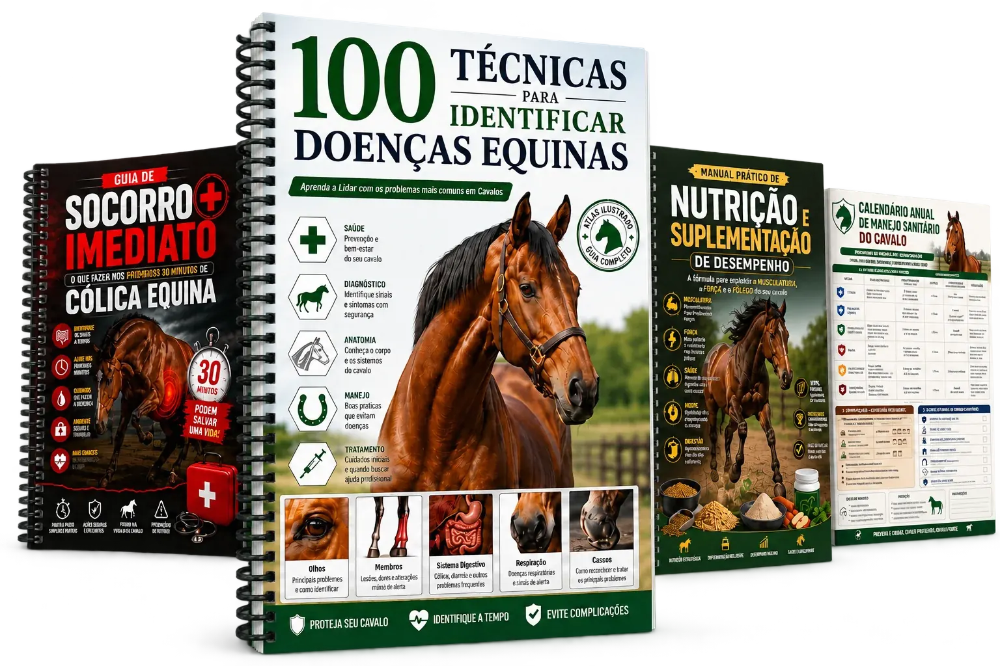
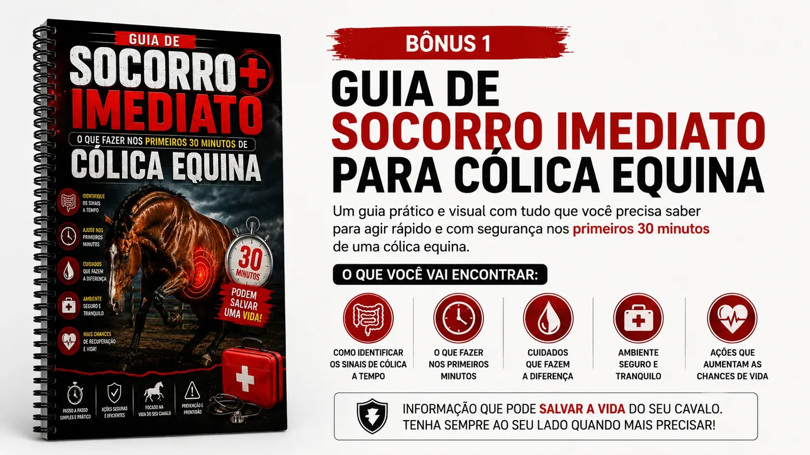
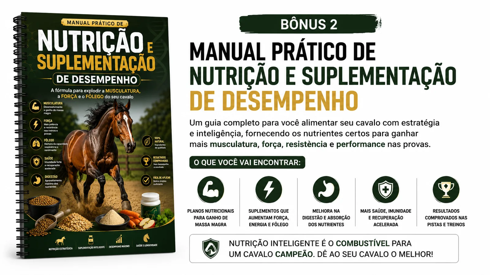
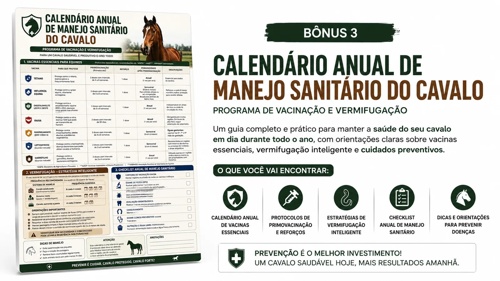
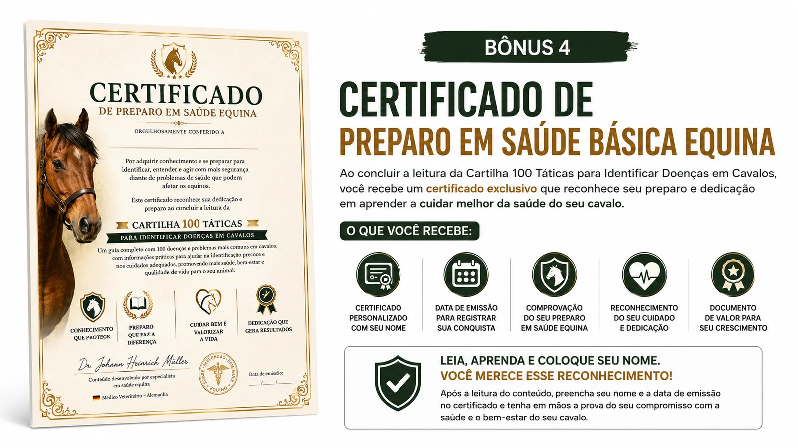
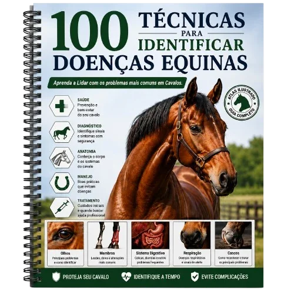
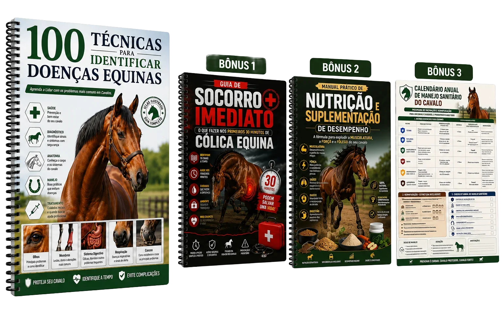
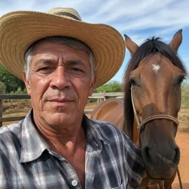

Estudantes de Medicina Veterinária
Aceleram o aprendizado clínico com um atlas visual de sinais, lesões e alterações do cavalo — ideal para provas, estágios e a rotina ambulatorial equina.
Prontas para consultar, identificar sinais clínicos e reconhecer rapidamente possíveis problemas no cavalo através de imagens e explicações de fácil entendimento.

Compra 100% segura • Acesso imediato
Desenvolvido sob medida para capacitar todos os elos da cadeia produtiva e acadêmica no campo.
Aceleram o aprendizado clínico com um atlas visual de sinais, lesões e alterações do cavalo — ideal para provas, estágios e a rotina ambulatorial equina.
Referência rápida de campo para triagem clínica, diagnóstico diferencial e comunicação objetiva com o tutor durante o atendimento equino.
Precisam manter o cavalo em pleno vigor para a lida e a competição, identificando qualquer sinal clínico antes que comprometa o desempenho do animal.
Desejam identificar rapidamente possíveis doenças, alterações físicas e sinais clínicos antes que o problema gere maiores prejuízos ao cavalo.
Precisam de um material visual e organizado para auxiliar nas inspeções, avaliações e monitoramento sanitário dos animais.
Lidam diariamente com os cavalos e desejam reconhecer alterações de comportamento, lesões e sintomas com muito mais facilidade.
Um guia clínico visual, pronto para virar seu braço direito no diagnóstico de campo e no consultório equino.
Do sinal comportamental sutil ao quadro clínico crítico — todas com ilustração de apoio.
Fotos e esquemas anatômicos com marcações que guiam o olhar direto ao achado relevante.
Divisões temáticas e índice visual: a informação certa em segundos, mesmo no meio do atendimento.
Terminologia técnica precisa, sem rodeios — pensada para decisões rápidas à beira do animal.
Aplicação prática na rotina real do veterinário equino — do haras à propriedade rural.
Estude do celular, tablet ou computador — sem mensalidade, com futuras revisões incluídas.
Dê uma olhada na clareza das marcações, detalhes e formato das páginas explicativas.
Se somados individualmente, estes conteúdos complementares teriam um alto valor. Mas hoje são seus gratuitamente.

O que fazer nos primeiros 30 minutos de uma cólica: sinais, ações rápidas e erros a evitar até chegar o veterinário.

Alimentação estratégica para ganhar músculo, força e fôlego — nutrição e suplementação simplificadas para o seu cavalo.

Calendário visual com vacinação, vermifugação e manejo preventivo mês a mês, o ano inteiro.

Certificado personalizável para registrar seu preparo em saúde básica equina ao concluir a cartilha.

Perfeito para quem busca apenas o essencial

Acesso completo com bônus e certificação
Veterinários, estudantes e proprietários de cavalos que receberam o material direto no WhatsApp.
Recebi o material no WhatsApp em menos de 2 minutos após o pagamento. Uso na rotina de campo como consulta rápida antes de fechar diagnóstico. Vale cada centavo.
Estou usando pra revisar clínica de grandes animais. As ilustrações ajudam demais a fixar os sinais clínicos. Meu professor até pediu pra ver o material.
Material sério, com linguagem técnica correta e imagens fiéis. Deixei salvo no celular pra consulta rápida e também mandei imprimir na gráfica do bairro. Recomendo.
Chegou no meu Whats na hora! Tô usando muito pra estágio em clínica equina, é bem mais didático que apostila da faculdade. Salvou meu semestre.
Comprei desconfiado, mas o conteúdo é sólido e bem organizado. Imprimi em casa e deixei na sala de veterinária pra treinar meus estagiários na propriedade. Excelente custo-benefício.
Recebi no WhatsApp de forma automática, tudo certinho. Já baixei no tablet e levo pra vivência no haras da faculdade. Muito bom mesmo.
Confesso que estava cética com o preço tão baixo, mas o material é muito bem feito. Mandei imprimir em casa e agora levo o físico junto nas visitas a haras da região. Vale demais.

Chegou tudo no WhatsApp rapidinho. Minha filha imprimiu em casa pra mim e agora consulto direto na estante do curral. Já consegui identificar dois sinais no meu cavalo antes de chamar o veterinário.
Clique e escolha o plano ideal para você
Se em até 7 dias você não amar a experiência com o material, devolvemos 100% do seu dinheiro. Sem perguntas, sem burocracia.
Tire suas dúvidas rápidas sobre o material e a entrega.
comprou o
·